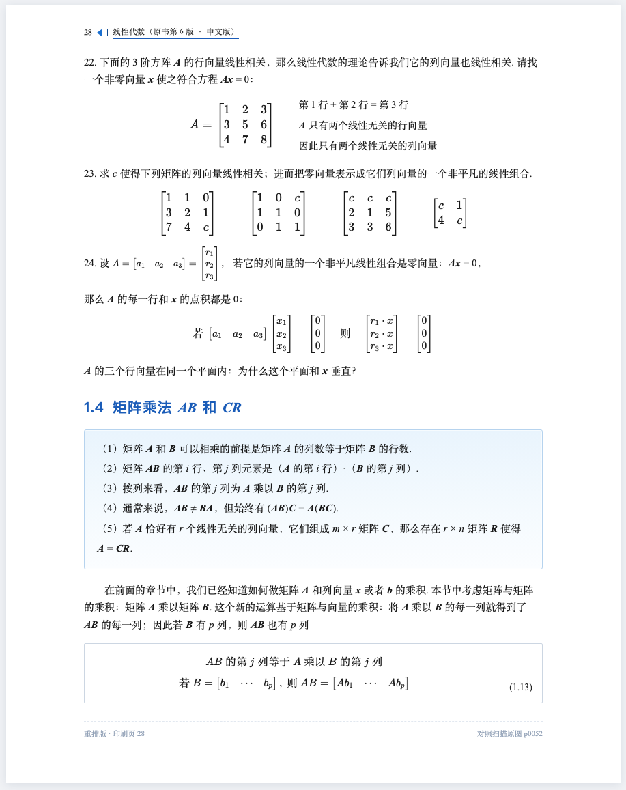
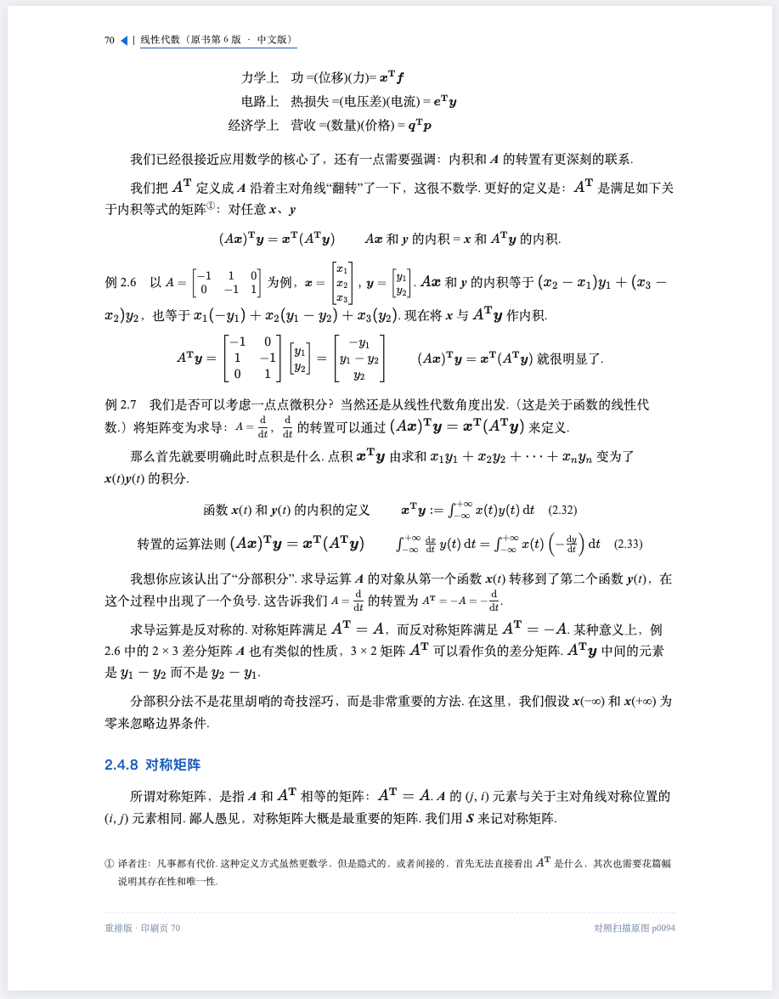

印刷第 28 页
习题 22–24 + 1.4 节开头主要考验：蓝底色块与块内 5 条文字、右侧三行注释的矩阵、一排 4 个矩阵、带编号的蓝框公式 (1.13)。
原书扫描 assets/pages/p0052.webp

文字重排版 retype/p0028.html

左边是原书扫描页，右边是把同一页的文字全部重新录入、用 CSS 排出来、公式用 KaTeX 排的结果 —— 没有使用任何扫描图。
主要考验：蓝底色块与块内 5 条文字、右侧三行注释的矩阵、一排 4 个矩阵、带编号的蓝框公式 (1.13)。

这一页是全书中排版最难的几种混在一起：三行对照表、带圈脚注 ①、左标题＋右式子的两栏、两个编号公式 (2.32)(2.33)、行内分式 d/dt、页脚译者注。


两页都还存在的细微差异（如实说明）：